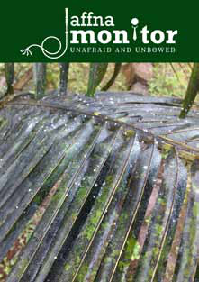

Looking Back, Moving Forward: Confronting Our History to Shape Our Future
Looking Back, Moving Forward: Confronting Our History to Shape Our Future
Jaffna Monitor hellojaffnamonitor@gmail.com 3 Looking Back, Moving Forward: Confronting Our History to Shape Our Future Dear Esteemed Readers, In our previous edition, we delved into the harrowing tale of the Verugal massacre—an event from two decades ago where Tamils tragically turned on each other. This sombre episode, often eclipsed by other calamities in our annals, provoked substantial feedback. Many shared constructive insights, yet a few staunch LTTE adherents outright denied the occurrence of the Verugal massacre. Such refutations of historical horrors are not merely unjust; they are perilous. Consider the uproar should anyone negate the Kumuthini boat massacre, the Val- vettithurai massacre, or the Navaly Church bombing. Would those same dissenters keep their silence or look the other way? This serves as a grave reminder of the injustices that arise when history is selectively acknowledged or intentionally ignored. Adding a twist of irony, some self-proclaimed former mem- bers of the LTTE's intelligence wing have lobbed accusations that our team at the Jaffna Monitor colluded with external forces to spotlight the Verugal massacre. These charges evoke images of the famously bumbling Inspector Clouseau from 'The 'Pink Panther' series, whose detective work was comically misguided and consistently off the mark. If these accusers tru- ly were the cream of the intelligence crop, one has to ponder how Pottu Amman managed to run a 'formidable' intelligence operation with such characters in the mix. It appears these erstwhile spies might do well to enroll in an introductory fact- checking course rather than spinning conspiracy theories that could even make Clouseau himself blush with embarrassment! Let us state this unequivocally and with profound clarity: the Verugal massacre was a harrowing tragedy, a bleak chapter where Tamils inflicted unspeakable harm upon their own. Both the assailants and the victims bore the same allegiance May 01, 2024 Fortnightly Edition Rs. 500 Crisis in Sri Lanka's Coconut Plantations The White Fly Onslaught:

Jaffna Monitor hellojaffnamonitor@gmail.com 4 to the LTTE. Given this truth, how can a faithful recounting of these events be twisted into an assault on the LTTE? How can it be branded as an anti-LTTE narrative when both those who perished and those who perpetrated were bound by the same cause? This isn't about taking sides; it's about acknowledging the painful realities of our shared history. Furthermore, we staunchly reject the oversimplified dichotomy of traitor versus hero that some attempt to enforce upon the narrative of our struggle. We also do not adhere to the prevailing notion that the actions of the LTTE leadership should remain beyond scrutiny. It is essential to state unequivocally that our role is to question. The LTTE leadership not only met its tragic demise in the Nanthi Kadal lagoon but also dragged hundreds of thousands of people and thousands of fighters into a devastating conflict with a grim and senseless end. These actions and decisions by the LTTE leadership must be critically examined and scrutinized to ensure our future generations understand what went wrong. If we fail to do this, we perpetrate a great injustice upon them. During their reign, any criticism of the LTTE leadership was met with lethal consequences. If we do not scrutinize their activities now, then when will we? The Eastern fighters, whether under the banner of the LTTE or Karuna Amman, took up arms driven by their deep commitment to the rights of the Tamil peo- ple. Labelling the Vanni Tigers as heroes and the entire Eastern cadre as traitors grossly misrepresents the complexity of their decisions and the intricate tapestry of our shared history. We refuse to endorse such a simplistic and unjust narra- tive. In this edition, we turn our attention to a critical contemporary issue: the white- fly infestation and its significant impact on the livelihoods of Sri Lankan farm- ers. We have delved into the extent of this agricultural crisis and discussed po- tential solutions. It is our commitment to not only reflect on the echoes of our past but also to address the pressing challenges currently facing our community. To our valued readers: Your engagement is crucial to us. We encourage you to share your thoughts and feedback. By confronting our past in all its complexity, we strive to build a more informed and empathetic future together. Warm regards, fzpad; G+q;Fd;wd; Kaniyan Pungundran Editor- Jaffna Monitor